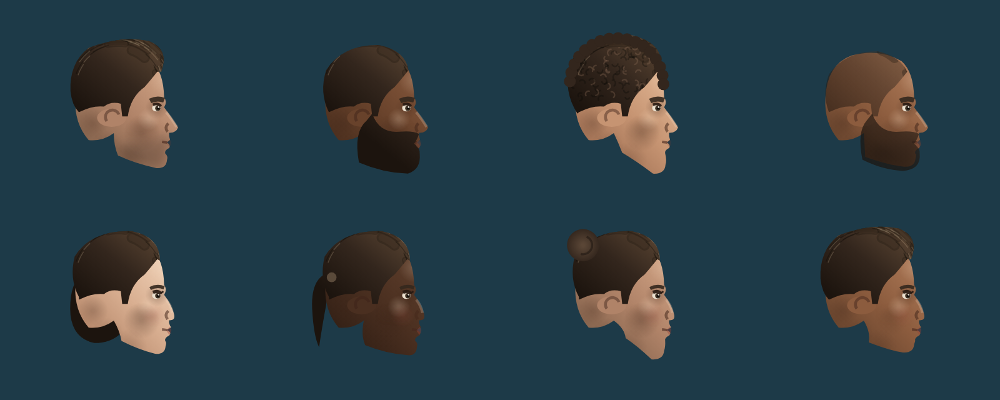
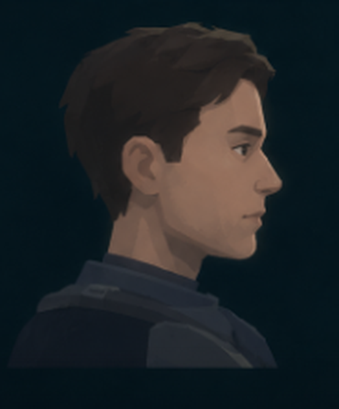
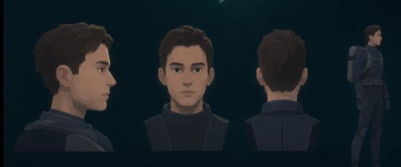
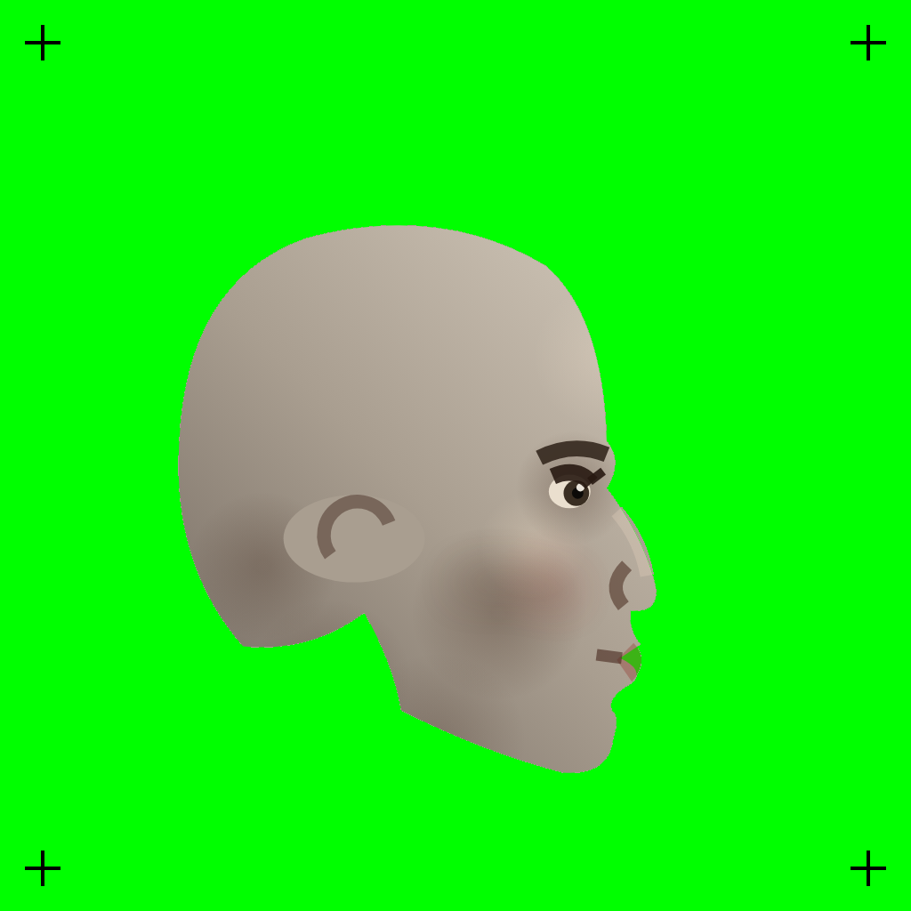
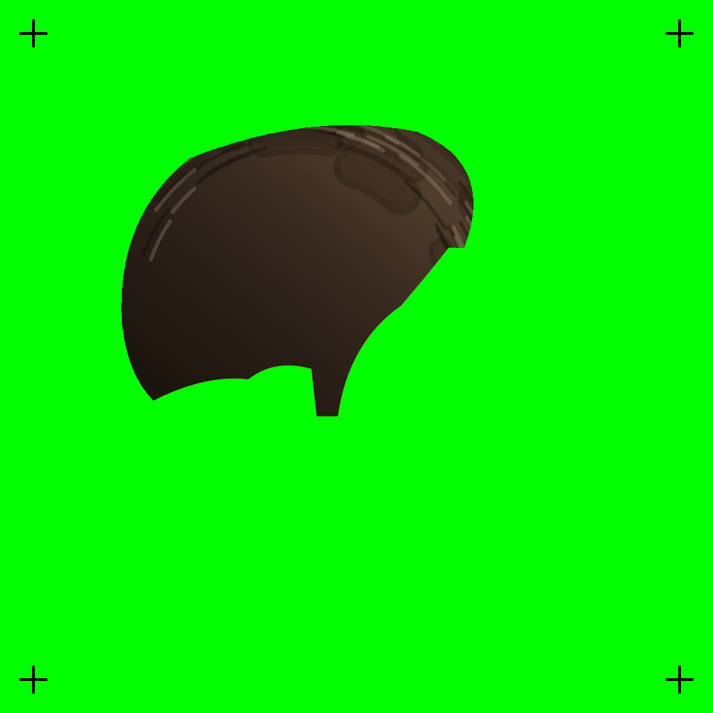
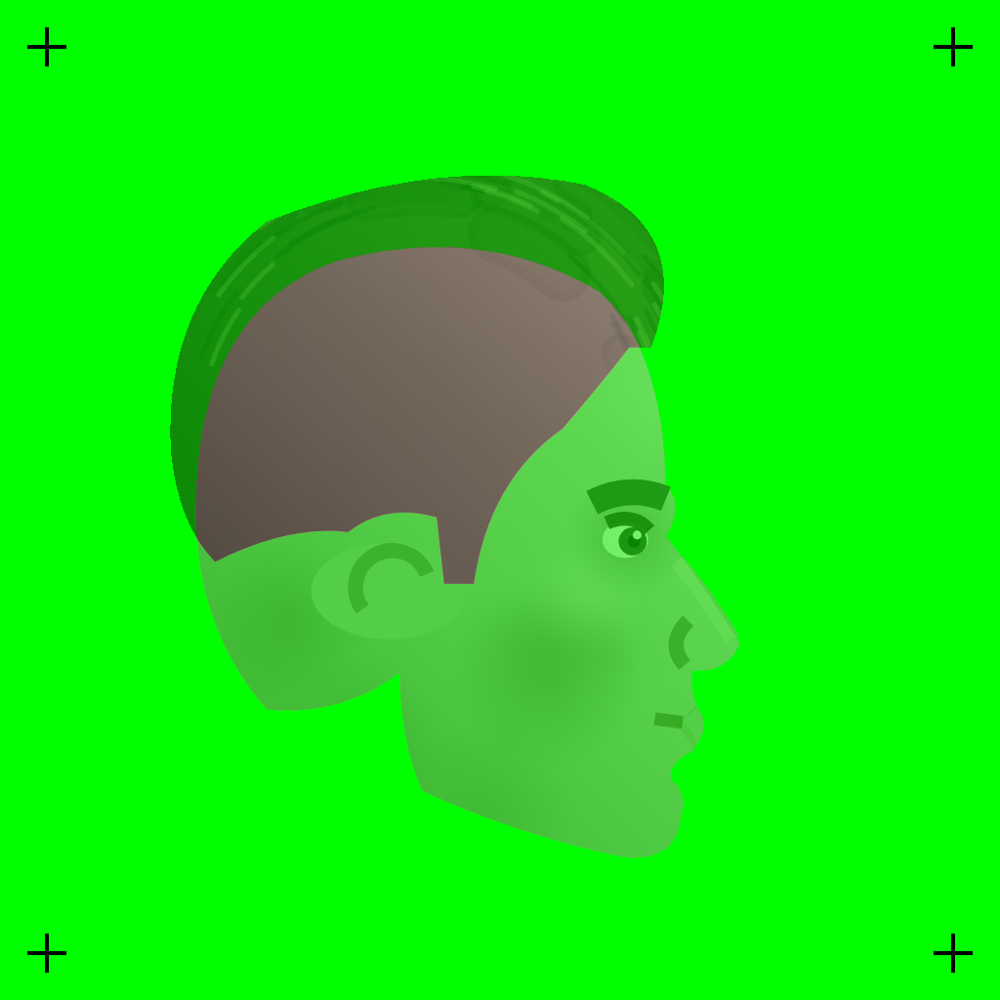

You are a Claude working on the owner's computer, in their browser. Your job is to have ChatGPT paint about 28 pieces of a diver's head for a phone game called Hatchetfish: Deep Sea Survival, check every one, redo the ones that fail, and hand back a folder of passed pieces. You do not change the game. Another Claude wires the pieces in afterwards.
In the game a new player makes their diver: man or woman, a face shape, a hairstyle, a beard, a skin and hair colour. The head is seen in profile in the creator, on the boat's deck, in the cabin, and in one scene after death. Underwater the diver wears a helmet, so the head is never seen in the sea. Today the heads are drawn in code (below); they are clean but flat. The painted pieces replace them.

The heads the game draws now (code). Same angle, same skull, same place: the painted pieces must keep exactly this layout.
pieces.json has status passed (or needs_owner after three failed tries).~/hatchetfish-heads/passed/, named as in the checklist, 1024 × 1024 PNG.~/hatchetfish-heads/log.json records every try: the prompt sent, the check results, your scores, why a retry was needed.~/hatchetfish-heads/contact.png shows every passed piece side by side.tools/heads/ of the game's repository)| File | What it is |
|---|---|
template_m.png, template_f.png | The two templates every image is an edit of (section 3). |
pieces.json | The checklist: every piece, its file name, its template, its exact prompt, its status (section 4). |
check_piece.py | The automatic check, run on every download (section 8). |
ref/ | Pictures of the game and an example piece with its overlay. |
The game is a quiet horror about being small in a dark sea, in muted colours: olive, bronze, bone, deep water and rust. The owner has chosen the look of the heads from a ChatGPT image (below): a hand-painted animated film still. Soft brush shading in simple clean planes, a natural adult face, calm, muted natural skin; no outlines, no gloss. This is the benchmark for the shape of the face and the painting.

ref/style_reference.png: attached to every prompt as Image 2 (section 6).

The whole sheet it comes from (ref/style_sheet.png), for you to look at; never attach this one: its three views and full figure would be copied.
| Failure | What it looks like |
|---|---|
| Generated gloss | Shiny skin, rim lights, perfect smoothness, a CGI or stock-art finish. |
| Cartoon | Outlines, hard flat cel shading, big eyes, anime or comic features (the reference is soft and natural, not a cartoon). |
| Copied reference | The reference's hair, clothes, shoulders, dark background or a second view showing up in the piece. |
| Moved | The head turned toward the viewer, tilted, larger, smaller or shifted; a neck or shoulders added. |
| New background | Any shading, texture, vignette or scene instead of flat pure green. |
| Extras | Text, signatures, frames, jewellery, glasses, earrings, clothing, props. |
| Wrong colour | Hair, beard or cap in a colour (they must be neutral grey: the game colours them itself). |
template_m.png

template_f.png
Each is 1024 × 1024: the game's own bald head, in profile facing right, in a neutral grey-beige skin (the game tints it to each skin colour), on flat pure green #00FF00 (so pieces can be cut out), with four black crosses at (48,48), (976,48), (48,976), (976,976) to prove nothing moved.
Every image is an edit of a template, never a fresh drawing. Asked to draw from nothing, ChatGPT gives every head a different size, angle and style, and nothing lines up. Asked to edit a fixed picture, it keeps the layout.
The skull, the ear, the back of the head and the eye are shared by every face, so every hairstyle fits every face. Faces differ only in front of the ear and below the cheekbone (jaw, chin, cheeks, nose).
pieces.json)| Group | Pieces | Template | Count |
|---|---|---|---|
| Men's heads | oval, square, narrow, round | m | 4 |
| Women's heads | oval, heart, long, round | f | 4 |
| Hairstyles | crop, swept, curly, buzz, bob, ponytail, bun (alone on green) | m | 7 |
| Beards | stubble, short, full × the four men's jaws (alone on green) | m | 12 |
| Knit cap | one (alone on green) | m | 1 |
Each entry:
{ "id": "hair_swept", "file": "hair_swept.png", "kind": "hair", "template": "template_m.png", "sex": "m",
"prompt": "Edit this image. Keep the canvas size, ... Change: give the head hair swept back ...",
"status": "todo", "tries": 0 }
Status moves: todo → sent → passed, or failed (tries + 1, retried) → after 3 failures
needs_owner. waiting means paused for a usage limit (section 7). Write the file after every change so a new chat or
a crash can carry on from where you were. Work in the order of the file (heads first: they show whether the style holds).
Every prompt is in pieces.json, word for word. Send them exactly; never reword them. The only thing you ever add is a
fix line from the list in section 9. Each prompt is the fixed preamble (two images: the template to edit, then the style reference) plus one change:
Two images are attached. Image 1 is the picture to edit. Image 2 is a style reference only: match how it is painted and how its face is shaped (soft painted shading, simple clean planes, a natural adult face, a calm expression), but do not copy its person, hair, clothes, layout or dark background. Edit Image 1: keep its canvas size, the head's position, size and angle, the four black corner crosses and the flat pure green background exactly as they are, and change only what is described below. Paint it like Image 2: a hand-painted animated film still, ... Change: give the head a square face: a strong, low, sharply turned jaw angle and a broad chin. Keep the skull, the ear, the back of the head and the eye exactly where they are; keep the neutral grey-beige skin and no hair at all.
Hair, beards and the cap end with: "Then show only the hair, alone on the same flat pure green background, in the same place it would sit on this head: remove the head, the face and the neck entirely, and keep the four corner crosses." They are asked for in one neutral mid grey; the game tints them to the seven hair colours.
~/hatchetfish-heads/raw/, passed/, log.json, and a copy of pieces.json.raw/<file>, adding _try2, _try3 for retries.passed/<file>. Failed: retry in a new chat with the fix lines (section 9).head_m_oval, first in the checklist) passes, Image 2 is
ref/style_reference.png. When it passes, copy it to ref/anchor.png and use that as Image 2 for every later
piece: it has our own head's proportions and the owner's chosen style, so all 28 pieces match each other.Image tools have usage limits. When a chat says you have reached a limit:
waiting.python3 check_piece.py raw/head_m_square.png head m # kinds: head | hair | beard | cap ; sex: m | f python3 check_piece.py raw/hair_swept.png hair m
It prints a JSON report and writes …_overlay.png (the piece at 50 % over the template). Exit code 0 means every check passed.
| Check | Passes when |
|---|---|
| size | exactly 1024 × 1024 |
| crosses | all four corner crosses within 2 px of the template's |
| key_border | the border band still flat pure green (under 1 % off) |
| skull_match (heads) | the back 55 % of the head matches the template, IoU ≥ 0.96 (about 5 px of drift) |
| head_overall (heads) | the whole head overlaps the template, IoU ≥ 0.80 (the face may change) |
| on_the_head (hair, beard, cap) | 97 % of the piece within a band round the template's head |
| off_the_face (hair, cap) | under 2 % of the piece over the face |

A hair piece (here the game's own hair, cut out, used to test the check).

Its overlay: the hair sits on the template's skull.
Open the image and its overlay. Score each 0, 1 or 2:
| Question | 2 | 1 | 0 |
|---|---|---|---|
| Painted and matte? | brushwork, no shine | a little smooth or glossy | render, gloss, cartoon |
| Same angle and place? | identical on the overlay | slight drift | turned, tilted, resized |
| Anatomy? | believable | one small oddity | wrong (two ears, melted jaw) |
| The asked-for change, and only that? | clearly that | weak or with a small extra | not there, or something else changed |
| Free of anything generated or extra? | clean | a faint artefact | text, objects, background |
| Painted like the reference (Image 2)? | same hand, same face shapes | close, a little off | another style |
Pass = automatic check passed, eye score ≥ 10 of 12, and no zero. Write the scores and one sentence of reasons in the log.
A failed piece is sent again in a new chat, with the template (never the failed image), the same prompt, and one
fix line added at the end for each thing that failed. The fix lines are in pieces.json under fix_lines:
| Failed | Line added |
|---|---|
| crosses | Keep the four black crosses in the corners exactly where they were; do not move, redraw or remove them. |
| skull_match | Keep the back of the head, the crown, the ear and the nape exactly where they were in the original; change only the face in front of the ear. |
| key_border | Keep the background one flat pure green (#00FF00) everywhere: no shading, texture, vignette or scenery. |
| gloss (eye) | Make it matte and painted by hand: no shine, no 3D-render look, no outlines. |
| style (eye) | Paint it the way Image 2 is painted: soft painted shading and simple clean planes, as in an animated film still; keep Image 1's layout. |
| copied reference | Do not copy anything from Image 2 except its painting style: no hair, clothes, shoulders, dark background or second view. |
| angle (eye) | Keep the exact side-on profile, facing right, as in the original; do not turn the head. |
| … | (the rest in fix_lines) |
Three tries at most. After the third failure mark the piece needs_owner, keep the best try in raw/, note why
it failed, and go on to the next piece. Never loosen a check to make a piece pass.
passed or needs_owner, make the contact sheet: every passed piece over its template,
4 across, labelled with its id (any simple script).passed/ into the repository's assets/face/ (or sends it to the game's Claude), which cuts the
green out, tints skins and hair, and wires them into the creator.| Problem | Do |
|---|---|
| The download is smaller than 1024 | Use the image's own full-size download, not a preview or screenshot. If ChatGPT itself changed the size, retry with the size fix line. |
| The style drifts over many pieces | Each piece gets a new chat and the original template. Compare against the first passed head; if the style has moved, mark the drifting ones failed with the gloss fix line. |
| A browser crash or a new chat with you | Read pieces.json and log.json and carry on from the first piece not passed. |
| Anything else unclear | Stop and ask the owner. Do not guess at the look. |